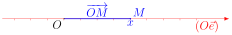
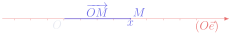
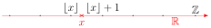
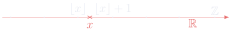
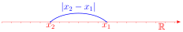
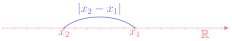
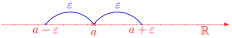
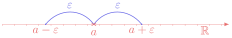

第 1 章 \(\mathbb{R}\) 的拓扑¶
Chapitre n°1 — Topologie de ℝ
阅读说明
每段先列法语原文；其下缩进、带深蓝竖条的小字号段落为中文翻译。加粗为关键词，括号内为中文释义。
Objectifs 学习目标¶
-
Manipuler des nombres réels.
熟练操作实数。
-
Résoudre des équations et des inéquations d'inconnues réelles.
求解以实数为未知量的方程与不等式。
-
Comprendre les différentes propriétés topologiques des parties de \(\mathbb{R}\).
理解 \(\mathbb{R}\) 的子集的各种拓扑性质。
Notations 记号¶
On rappelle que \(\mathbb{R}\) désigne l'ensemble des nombres réels, \(\mathbb{Q}\) désigne l'ensemble des nombres rationnels, \(\mathbb{Z}\) désigne l'ensemble des entiers relatifs et \(\mathbb{N}\) désigne l'ensemble des entiers naturels.
回顾：\(\mathbb{R}\) 表示实数集，\(\mathbb{Q}\) 表示有理数集，\(\mathbb{Z}\) 表示整数集（entiers relatifs），\(\mathbb{N}\) 表示自然数集。
On note \(\mathbb{R}_+=\{x\in\mathbb{R}\mid x\geqslant 0\}\) le sous-ensemble des nombres réels positifs, \(\mathbb{R}_-=\{x\in\mathbb{R}\mid x\leqslant 0\}\) le sous-ensemble des nombres réels négatifs et \(\mathbb{R}^*=\{x\in\mathbb{R}\mid x\neq 0\}\) le sous-ensemble des nombres réels non nuls.
记 \(\mathbb{R}_+=\{x\in\mathbb{R}\mid x\geqslant 0\}\) 为非负实数子集，\(\mathbb{R}_-=\{x\in\mathbb{R}\mid x\leqslant 0\}\) 为非正实数子集，\(\mathbb{R}^*=\{x\in\mathbb{R}\mid x\neq 0\}\) 为非零实数子集。
Description de ℝ 描述 ℝ¶
Définition 1.1 : la droite réelle
定义 1.1：实数轴（droite réelle）
L'ensemble des nombres réels, noté \(\mathbb{R}\), peut être vu comme l'ensemble des positions possibles sur une droite orientée. Autrement dit, on peut représenter géométriquement \(\mathbb{R}\) par une droite munie d'un repère \((O,\vec{e})\) : à chaque nombre réel \(x\in\mathbb{R}\), on associe le point \(M\) de coordonnée \(x\), c'est-à-dire tel que \(\overrightarrow{OM}=x\vec{e}\). Cette représentation de \(\mathbb{R}\) est appelée la droite réelle.
实数集记作 \(\mathbb{R}\)，可以看作一条有向直线（droite orientée）上所有可能位置的集合。换言之， 可以把 \(\mathbb{R}\) 几何地表示为一条带有标架（repère）\((O,\vec{e})\) 的直线：对每个实数 \(x\in\mathbb{R}\)，对应直线上的点 \(M\)，其坐标（coordonnée）为 \(x\)，即满足 \(\overrightarrow{OM}=x\vec{e}\)。\(\mathbb{R}\) 的这种表示称为实数轴（droite réelle）。
 
Remarque
注（Remarque）
Il existe des constructions mathématiques plus précises de l'ensemble des nombres réels, qui permettent de démontrer rigoureusement ses propriétés. On ne les présentera pas ici : le but de ce chapitre est seulement de rappeler les principales propriétés de \(\mathbb{R}\), en admettant certaines d'entre elles.
实数集还存在更精确的数学构造，可以严格证明它的各种性质。这里不介绍这些构造：本章的目的仅仅是 回顾 \(\mathbb{R}\) 的主要性质，其中某些性质我们直接承认（admettre）。
Propriété 1.2 : opérations avec les nombres réels
性质 1.2：实数的运算
L'ensemble \(\mathbb{R}\) est muni d'une addition et d'une multiplication qui vérifient les propriétés usuelles, en particulier :
集合 \(\mathbb{R}\) 上带有加法（addition）与乘法（multiplication），它们满足通常的 性质，特别地：
- associativité（结合律）：\(\forall(x_1,x_2,x_3)\in\mathbb{R}^3\), \(\begin{cases}(x_1+x_2)+x_3=x_1+(x_2+x_3)\\[2pt](x_1x_2)x_3=x_1(x_2x_3)\end{cases}\),
- commutativité（交换律）：\(\forall(x_1,x_2)\in\mathbb{R}^2\), \(\begin{cases}x_1+x_2=x_2+x_1\\[2pt]x_1x_2=x_2x_1\end{cases}\),
- distributivité（分配律）：\(\forall(x_1,x_2,x_3)\in\mathbb{R}^3\), \(x_1(x_2+x_3)=x_1x_2+x_1x_3\),
- intégrité（整性，即无零因子）：\(\forall(x,y)\in\mathbb{R}^2\), \(xy=0\Longrightarrow(x=0\) ou \(y=0)\).
Propriété 1.3 : relation d'ordre sur \(\mathbb{R}\)
性质 1.3：\(\mathbb{R}\) 上的序关系
L'ensemble \(\mathbb{R}\) est muni d'une relation d'ordre \(\leqslant\) qui vérifie les propriétés usuelles, en particulier :
集合 \(\mathbb{R}\) 上带有序关系（relation d'ordre）\(\leqslant\)，它满足通常的性质， 特别地：
- antisymétrie（反对称性）：\(\forall(x,y)\in\mathbb{R}^2\), \((x\leqslant y\) et \(x\geqslant y)\Longrightarrow x=y\),
- transitivité（传递性）：\(\forall(x_1,x_2,x_3)\in\mathbb{R}^3\), \((x_1\leqslant x_2\) et \(x_2\leqslant x_3)\Longrightarrow x_1\leqslant x_3\),
- compatibilité avec l'addition（与加法的相容性）：\(\forall(x_1,x_2,x_3)\in\mathbb{R}^3\), \(x_1\leqslant x_2\Longrightarrow x_1+x_3\leqslant x_2+x_3\),
-
compatibilité avec la multiplication（与乘法的相容性）：
\[ \forall(x_1,x_2)\in\mathbb{R}^2,\ \forall\lambda\in\mathbb{R}_+,\ x_1\leqslant x_2\Longrightarrow\lambda x_1\leqslant\lambda x_2. \]
Attention
注意（Attention）
Si on multiplie une inégalité par un nombre négatif, l'inégalité change de sens !
如果用一个负数去乘一个不等式，不等号要变向！
En particulier, il faut être vigilant pour soustraire des inégalités :
特别地，两个不等式相减时要格外小心：
De même, puisque la fonction \(t\mapsto 1/t\) est décroissante sur \(\mathbb{R}_+^*\) et sur \(\mathbb{R}_-^*\) (mais pas sur \(\mathbb{R}^*\)), il faut être vigilant pour inverser des inégalités :
同样，由于函数 \(t\mapsto 1/t\) 在 \(\mathbb{R}_+^*\) 和 \(\mathbb{R}_-^*\) 上递减（但在 \(\mathbb{R}^*\) 上并非如此），取倒数时要格外小心：
Vocabulaire clé 重点词汇
第一节核心术语
- droite réelle：实数轴
- droite orientée：有向直线
- repère \((O,\vec{e})\)：标架（原点 \(O\) 与基向量 \(\vec{e}\)）
- coordonnée：坐标
- muni de：带有、赋予（「\(\mathbb{R}\) est muni d'une addition」即 \(\mathbb{R}\) 上带有加法）
- vérifier les propriétés usuelles：满足通常的性质
- en particulier：特别地
- autrement dit：换言之
- relation d'ordre：序关系
- associativité / commutativité / distributivité：结合律 / 交换律 / 分配律
- intégrité：整性（无零因子）
- antisymétrie / transitivité：反对称性 / 传递性
- compatibilité avec l'addition：与加法的相容性
- être vigilant：要小心、要警惕
- changer de sens：变向（不等号方向改变）
- on admet：我们承认（不加证明地接受）
Partie entière 整数部分¶
Définition 2.1 : partie entière
定义 2.1：整数部分（partie entière）
La partie entière d'un nombre réel \(x\in\mathbb{R}\) est l'unique entier \(\lfloor x\rfloor\in\mathbb{Z}\) tel que :
实数 \(x\in\mathbb{R}\) 的整数部分（partie entière）是唯一满足下式的整数 \(\lfloor x\rfloor\in\mathbb{Z}\)：
Autrement dit, la partie entière de \(x\) est le plus grand entier inférieur ou égal à \(x\).
换言之，\(x\) 的整数部分就是不超过 \(x\) 的最大整数。
 
Exemple 2.2
例 2.2
Puisque \(1<3<4\), on a \(1<\sqrt{3}<2\) car la fonction \(t\mapsto\sqrt{t}\) est strictement croissante, donc \(\lfloor\sqrt{3}\rfloor=1\). De même, puisque \(4<7<9\), on a \(2<\sqrt{7}<3\), donc \(\lfloor\sqrt{7}\rfloor=2\).
由于 \(1<3<4\)，有 \(1<\sqrt{3}<2\)，这是因为函数 \(t\mapsto\sqrt{t}\) 严格递增，故 \(\lfloor\sqrt{3}\rfloor=1\)。同理，由于 \(4<7<9\)，有 \(2<\sqrt{7}<3\)，故 \(\lfloor\sqrt{7}\rfloor=2\)。
Mais ces inégalités sont insuffisantes pour déterminer \(\lfloor 2\sqrt{3}+\sqrt{7}\rfloor\) car on a seulement \(4<2\sqrt{3}+\sqrt{7}<7\). Il faut trouver des encadrements plus précis, par exemple :
但这些不等式不足以确定 \(\lfloor 2\sqrt{3}+\sqrt{7}\rfloor\)，因为只知道 \(4<2\sqrt{3}+\sqrt{7}<7\)。 需要更精细的夹逼估计（encadrement），例如：
On en déduit que :
由此推出：
Valeur absolue 绝对值¶
Définition 3.1 : valeur absolue
定义 3.1：绝对值（valeur absolue）
La valeur absolue d'un nombre réel \(x\in\mathbb{R}\) est le nombre réel positif :
实数 \(x\in\mathbb{R}\) 的绝对值（valeur absolue）是如下非负实数：
Sur la droite réelle, \(|x|\) est la distance entre l'origine \(O\) et le point de coordonnée \(x\).
在实数轴上，\(|x|\) 是原点 \(O\) 与坐标为 \(x\) 的点之间的距离。
Plus généralement, si \(x_1\in\mathbb{R}\) et \(x_2\in\mathbb{R}\) sont les coordonnées respectives des points \(M_1\) et \(M_2\) sur la droite réelle, alors \(|x_2-x_1|=\big\|\overrightarrow{M_1M_2}\big\|=M_1M_2\) est la distance entre \(M_1\) et \(M_2\).
更一般地，若 \(x_1\in\mathbb{R}\) 与 \(x_2\in\mathbb{R}\) 分别是实数轴上点 \(M_1\) 与 \(M_2\) 的坐标， 则 \(|x_2-x_1|=\big\|\overrightarrow{M_1M_2}\big\|=M_1M_2\) 是 \(M_1\) 与 \(M_2\) 之间的距离。
 
Exemple 3.2
例 3.2
Soit \((x,y)\in\mathbb{R}^2\). On a :
设 \((x,y)\in\mathbb{R}^2\)。有：
De même, on peut montrer que \(\dfrac{x+y-|x-y|}{2}=\min\{x,y\}\).
同样可以证明 \(\dfrac{x+y-|x-y|}{2}=\min\{x,y\}\)。
Propriété 3.3
性质 3.3
- \(\forall x\in\mathbb{R}\), \(|x|\geqslant 0\),
- \(\forall x\in\mathbb{R}\), \(|x|=0\Longleftrightarrow x=0\),
- \(\forall(x,y)\in\mathbb{R}^2\), \(|xy|=|x||y|\).
Propriété 3.4 : inégalité triangulaire dans \(\mathbb{R}\)
性质 3.4：\(\mathbb{R}\) 中的三角不等式
Le cas d'égalité se produit si et seulement si \(x\) et \(y\) ont même signe. De plus :
等号成立（cas d'égalité）当且仅当 \(x\) 与 \(y\) 同号。此外：
Vocabulaire clé 重点词汇
第二、三节核心术语
- partie entière \(\lfloor x\rfloor\)：整数部分（向下取整）
- l'unique entier：唯一的整数
- le plus grand entier inférieur ou égal à \(x\)：不超过 \(x\) 的最大整数
- strictement croissante：严格递增的
- encadrement：夹逼估计、上下界估计
- on en déduit que：由此推出
- valeur absolue \(|x|\)：绝对值
- distance：距离
- même signe：同号
- inégalité triangulaire：三角不等式
- le cas d'égalité：等号成立的情形
- si et seulement si：当且仅当
- on peut montrer que：可以证明
Intervalles 区间¶
Définition 4.1 : intervalle
定义 4.1：区间（intervalle）
Un intervalle est un sous-ensemble \(I\subset\mathbb{R}\) qui vérifie la propriété suivante :
区间（intervalle）是满足下述性质的子集 \(I\subset\mathbb{R}\)：
Autrement dit, un intervalle est une partie de \(\mathbb{R}\) sans trou.
换言之，区间就是 \(\mathbb{R}\) 中没有洞的子集。
Exemple 4.2
例 4.2
-
\(\mathbb{N}\), \(\mathbb{Z}\) et \(\mathbb{Q}\) ne sont pas des intervalles.
\(\mathbb{N}\)、\(\mathbb{Z}\) 和 \(\mathbb{Q}\) 都不是区间。
-
\(\mathbb{R}_+\) et \(\mathbb{R}_-\) sont des intervalles, mais pas \(\mathbb{R}^*\).
\(\mathbb{R}_+\) 和 \(\mathbb{R}_-\) 是区间，但 \(\mathbb{R}^*\) 不是。
Propriété 4.3
性质 4.3
Les intervalles sont les parties de \(\mathbb{R}\) de la forme :
区间就是 \(\mathbb{R}\) 中具有下列形式的子集：

où \(a\) et \(b\) sont des nombres réels.
其中 \(a\) 与 \(b\) 是实数。
En particulier, l'ensemble vide \(\varnothing=]a,a[\) est un intervalle et tout singleton \(\{a\}=[a,a]\) est un intervalle. Les intervalles de la forme \([a,b]\) sont appelés des segments.
特别地，空集（ensemble vide）\(\varnothing=]a,a[\) 是区间，任何单元素集（singleton） \(\{a\}=[a,a]\) 也是区间。形如 \([a,b]\) 的区间称为闭区间（segment）。
Propriété 4.4
性质 4.4
Soient \(a\in\mathbb{R}\) et \(\varepsilon>0\). Pour tout \(x\in\mathbb{R}\), on a :
设 \(a\in\mathbb{R}\)，\(\varepsilon>0\)。对任意 \(x\in\mathbb{R}\)，有：
 
Voisinages, ouverts et fermés 邻域、开集与闭集¶
Définition 5.1 : voisinage
定义 5.1：邻域（voisinage）
Soient \(V\subset\mathbb{R}\) et \(a\in\mathbb{R}\). On dit que \(V\) est un voisinage de \(a\) lorsque :
设 \(V\subset\mathbb{R}\)，\(a\in\mathbb{R}\)。当下式成立时，称 \(V\) 是 \(a\) 的一个邻域（voisinage）：
Autrement dit, \(V\) est un voisinage de \(a\) si et seulement si \(V\) contient tous les nombres réels suffisamment proches de \(a\).
换言之，\(V\) 是 \(a\) 的邻域当且仅当 \(V\) 包含所有与 \(a\) 充分接近的实数。
Exemple 5.2
例 5.2
-
\(\mathbb{R}_+=[0,+\infty[\) est un voisinage de \(1\) mais pas de \(0\).
\(\mathbb{R}_+=[0,+\infty[\) 是 \(1\) 的邻域，但不是 \(0\) 的邻域。
-
Pour tout \(x\in\mathbb{R}\), \(\mathbb{R}\) est un voisinage de \(x\) alors que \(\mathbb{N}\), \(\mathbb{Z}\) et \(\mathbb{Q}\) ne le sont pas.
对任意 \(x\in\mathbb{R}\)，\(\mathbb{R}\) 都是 \(x\) 的邻域，而 \(\mathbb{N}\)、\(\mathbb{Z}\) 和 \(\mathbb{Q}\) 都不是。
Définition 5.3 : ouvert et fermé
定义 5.3：开集与闭集（ouvert et fermé）
Soit \(A\subset\mathbb{R}\).
设 \(A\subset\mathbb{R}\)。
-
On dit que \(A\) est ouvert lorsque \(A\) est un voisinage de chacun de ses points, c'est-à-dire lorsque :
当 \(A\) 是它每一点的邻域时，称 \(A\) 是开集（ouvert），也就是说：
\[ \forall a\in A,\ \exists\varepsilon>0,\ ]a-\varepsilon,a+\varepsilon[\subset A. \] -
On dit que \(A\) est fermé lorsque son complémentaire \(\mathbb{R}\setminus A=\{x\in\mathbb{R}\mid x\notin A\}\) est ouvert.
当 \(A\) 的补集（complémentaire）\(\mathbb{R}\setminus A=\{x\in\mathbb{R}\mid x\notin A\}\) 是开集时，称 \(A\) 是闭集（fermé）。
Exemple 5.4
例 5.4
-
Les intervalles ouverts sont ceux de la forme \(]a,b[\), \(]a,+\infty[\), \(]-\infty,b[\) et \(\mathbb{R}\) où \((a,b)\in\mathbb{R}^2\).
开区间就是形如 \(]a,b[\)、\(]a,+\infty[\)、\(]-\infty,b[\) 和 \(\mathbb{R}\) 的区间，其中 \((a,b)\in\mathbb{R}^2\)。
-
Les intervalles fermés sont ceux de la forme \([a,b]\), \([a,+\infty[\), \(]-\infty,b]\) et \(\mathbb{R}\) où \((a,b)\in\mathbb{R}^2\).
闭区间就是形如 \([a,b]\)、\([a,+\infty[\)、\(]-\infty,b]\) 和 \(\mathbb{R}\) 的区间，其中 \((a,b)\in\mathbb{R}^2\)。
-
Les intervalles de la forme \([a,b[\) et \(]a,b]\) où \((a,b)\in\mathbb{R}^2\) ne sont ni ouverts ni fermés.
形如 \([a,b[\) 和 \(]a,b]\) 的区间（其中 \((a,b)\in\mathbb{R}^2\)）既不是开集也不是闭集。
-
\(\mathbb{N}\) et \(\mathbb{Z}\) ne sont pas ouverts mais sont fermés, alors que \(\mathbb{Q}\) n'est ni ouvert ni fermé.
\(\mathbb{N}\) 和 \(\mathbb{Z}\) 不是开集但是闭集，而 \(\mathbb{Q}\) 既不是开集也不是闭集。
-
\(\mathbb{R}^*=\,]-\infty,0[\,\cup\,]0,+\infty[\) est ouvert mais pas fermé.
\(\mathbb{R}^*=\,]-\infty,0[\,\cup\,]0,+\infty[\) 是开集但不是闭集。
En particulier, les seuls intervalles ouverts et fermés sont \(\mathbb{R}\) et \(\varnothing\).
特别地，唯一既是开集又是闭集的区间是 \(\mathbb{R}\) 和 \(\varnothing\)。
Densité de ℚ ℚ 的稠密性¶
On rappelle que les nombres rationnels sont les nombres réels dont l'écriture décimale est périodique à partir d'une certaine décimale.
回顾：有理数就是小数表示从某一位起循环的实数。
Théorème 6.1 : approximation par des rationnels
定理 6.1：用有理数逼近
\(\mathbb{Q}\) est dense dans \(\mathbb{R}\), c'est-à-dire que pour tout \(x\in\mathbb{R}\), tout voisinage de \(x\) contient au moins un nombre rationnel.
\(\mathbb{Q}\) 在 \(\mathbb{R}\) 中稠密（dense），也就是说：对任意 \(x\in\mathbb{R}\)， \(x\) 的任意邻域至少包含一个有理数。
Plus généralement, tout ouvert non vide de \(\mathbb{R}\) contient au moins un nombre rationnel.
更一般地，\(\mathbb{R}\) 的任何非空开集都至少包含一个有理数。
Démonstration. Soient \(x\in\mathbb{R}\) et \(V\subset\mathbb{R}\) un voisinage de \(x\). On sait qu'il existe \(\varepsilon>0\) tel que \(]x-\varepsilon,x+\varepsilon[\subset V\). Pour tout \(n\in\mathbb{N}\), on a par définition de la partie entière :
证明. 设 \(x\in\mathbb{R}\)，\(V\subset\mathbb{R}\) 是 \(x\) 的邻域。已知存在 \(\varepsilon>0\) 使得 \(]x-\varepsilon,x+\varepsilon[\subset V\)。对任意 \(n\in\mathbb{N}\)，由整数部分的定义有：
Par conséquent :
因此：
Ainsi, si on choisit \(n\) suffisamment grand afin que \(10^{-n}<\varepsilon\), alors \(x-\varepsilon<x-\frac{1}{10^n}\), donc le nombre rationnel \(\lfloor 10^n x\rfloor/10^n\) appartient à \(]x-\varepsilon,x+\varepsilon[\subset V\).
于是，若取 \(n\) 充分大使得 \(10^{-n}<\varepsilon\)，则 \(x-\varepsilon<x-\frac{1}{10^n}\)， 因此有理数 \(\lfloor 10^n x\rfloor/10^n\) 属于 \(]x-\varepsilon,x+\varepsilon[\subset V\)。
∎
Important
要点（Important）
La densité de \(\mathbb{Q}\) dans \(\mathbb{R}\) signifie que tout nombre réel peut être approché aussi près qu'on veut par des nombres rationnels.
\(\mathbb{Q}\) 在 \(\mathbb{R}\) 中的稠密性意味着：任何实数都可以用有理数任意逼近。
Exemple 6.2
例 6.2
Montrons par l'absurde que \(\sqrt{2}\notin\mathbb{Q}\). Sinon, on peut écrire \(\sqrt{2}\) sous la forme d'une fraction irréductible : \(\sqrt{2}=\frac{p}{q}\) où \(p\) et \(q\neq 0\) sont deux entiers premiers entre eux. On en déduit que \(q^2=2p^2\) est pair, donc que \(q\) est pair. Ainsi, \(q\) peut s'écrire sous la forme \(q=2k\) où \(k\neq 0\) est un entier. Par conséquent, \(p^2=q^2/2=2k^2\) est pair, donc \(p\) est pair. Ce qui est absurde car \(p\) et \(q\) sont premiers entre eux. On a bien montré que \(\sqrt{2}\notin\mathbb{Q}\).
我们用反证法（par l'absurde）证明 \(\sqrt{2}\notin\mathbb{Q}\)。否则，可以把 \(\sqrt{2}\) 写成 不可约分数（fraction irréductible）：\(\sqrt{2}=\frac{p}{q}\)，其中 \(p\) 与 \(q\neq 0\) 是 两个互素（premiers entre eux）的整数。由此推出 \(q^2=2p^2\) 是偶数，故 \(q\) 是偶数。于是 \(q\) 可写成 \(q=2k\)，其中 \(k\neq 0\) 是整数。因此 \(p^2=q^2/2=2k^2\) 是偶数，故 \(p\) 是偶数。这与 \(p\)、\(q\) 互素矛盾。这就证明了 \(\sqrt{2}\notin\mathbb{Q}\)。
Par contre, on peut approcher \(\sqrt{2}\) aussi près qu'on veut par des nombres rationnels. Par exemple, pour tout \(n\in\mathbb{N}\), le nombre \(\lfloor 10^n\sqrt{2}\rfloor/10^n\in\mathbb{Q}\) obtenu en supprimant les décimales de \(\sqrt{2}\) après la \(n\)-ième est une approximation de \(\sqrt{2}\) à \(10^{-n}\) près.
但另一方面，\(\sqrt{2}\) 可以用有理数任意逼近。例如，对任意 \(n\in\mathbb{N}\)，把 \(\sqrt{2}\) 第 \(n\) 位 之后的小数舍去得到的数 \(\lfloor 10^n\sqrt{2}\rfloor/10^n\in\mathbb{Q}\)，就是 \(\sqrt{2}\) 的一个 误差不超过 \(10^{-n}\) 的逼近。
Vocabulaire clé 重点词汇
第四、五、六节核心术语
- intervalle：区间
- sous-ensemble：子集
- ensemble vide \(\varnothing\)：空集
- singleton \(\{a\}\)：单元素集
- segment \([a,b]\)：闭区间（线段）
- sans trou：没有洞
- voisinage de \(a\)：\(a\) 的邻域
- suffisamment proche：充分接近
- ouvert / fermé：开集 / 闭集
- complémentaire：补集
- ni ouvert ni fermé：既不是开集也不是闭集
- dense dans \(\mathbb{R}\)：在 \(\mathbb{R}\) 中稠密
- densité：稠密性
- approcher aussi près qu'on veut：任意逼近
- par l'absurde：用反证法
- fraction irréductible：不可约分数
- premiers entre eux：互素的
- pair / impair：偶数的 / 奇数的
- écriture décimale périodique：循环小数表示
- ouvert non vide：非空开集
Bornes 界¶
Définition 7.1 : majorant et minorant
定义 7.1：上界与下界（majorant et minorant）
Soit \(A\subset\mathbb{R}\).
设 \(A\subset\mathbb{R}\)。
-
On dit qu'un nombre réel \(M\in\mathbb{R}\) est un majorant de \(A\) lorsque :
当实数 \(M\in\mathbb{R}\) 满足下式时，称它是 \(A\) 的一个上界（majorant）：
\[ \forall a\in A,\ a\leqslant M. \]Si \(A\) admet au moins un majorant, on dit que \(A\) est majorée.
若 \(A\) 至少有一个上界，则称 \(A\) 是有上界的（majorée）。
-
On dit qu'un nombre réel \(m\in\mathbb{R}\) est un minorant de \(A\) lorsque :
当实数 \(m\in\mathbb{R}\) 满足下式时，称它是 \(A\) 的一个下界（minorant）：
\[ \forall a\in A,\ a\geqslant m. \]Si \(A\) admet au moins un minorant, on dit que \(A\) est minorée.
若 \(A\) 至少有一个下界，则称 \(A\) 是有下界的（minorée）。
-
On dit que \(A\) est bornée lorsque \(A\) est majorée et minorée, c'est-à-dire :
当 \(A\) 既有上界又有下界时，称 \(A\) 是有界的（bornée），也就是说：
\[ \exists(m,M)\in\mathbb{R}^2,\ \forall a\in A,\ m\leqslant a\leqslant M. \]
Exemple 7.2
例 7.2
-
L'ensemble des majorants de \([0,1[\) est \([1,+\infty[\) et l'ensemble de ses minorants est \(]-\infty,0]\). En particulier, \([0,1[\) est borné.
区间 \([0,1[\) 的上界集合是 \([1,+\infty[\)，下界集合是 \(]-\infty,0]\)。特别地，\([0,1[\) 是有界的。
-
\(\mathbb{R}_-\) est majorée mais pas minorée, donc \(\mathbb{R}_-\) n'est pas bornée.
\(\mathbb{R}_-\) 有上界但无下界，因此 \(\mathbb{R}_-\) 不是有界的。
Définition 7.3 : plus grand élément et plus petit élément
定义 7.3：最大元与最小元
Soit \(A\subset\mathbb{R}\).
设 \(A\subset\mathbb{R}\)。
-
Si \(A\) admet un majorant qui appartient à \(A\), alors ce majorant est unique et est appelé le plus grand élément de \(A\). On le note \(\max(A)\).
若 \(A\) 有一个属于 \(A\) 本身的上界，则该上界唯一，称为 \(A\) 的最大元（plus grand élément）， 记作 \(\max(A)\)。
-
Si \(A\) admet un minorant qui appartient à \(A\), alors ce minorant est unique et est appelé le plus petit élément de \(A\). On le note \(\min(A)\).
若 \(A\) 有一个属于 \(A\) 本身的下界，则该下界唯一，称为 \(A\) 的最小元（plus petit élément）， 记作 \(\min(A)\)。
En effet, si \(M_1\) et \(M_2\) sont deux majorants de \(A\) qui appartiennent à \(A\), alors \(M_1\leqslant M_2\) (car \(M_1\in A\) et \(M_2\) majorant de \(A\)) et de même \(M_2\leqslant M_1\), donc \(M_1=M_2\) par antisymétrie.
事实上，若 \(M_1\) 与 \(M_2\) 是 \(A\) 的两个属于 \(A\) 的上界，则 \(M_1\leqslant M_2\)（因为 \(M_1\in A\) 而 \(M_2\) 是 \(A\) 的上界），同理 \(M_2\leqslant M_1\)，故由反对称性得 \(M_1=M_2\)。
Définition 7.4 : borne supérieure et borne inférieure
定义 7.4：上确界与下确界
Soit \(A\subset\mathbb{R}\).
设 \(A\subset\mathbb{R}\)。
-
Si l'ensemble des majorants de \(A\) admet un plus petit élément, alors ce plus petit élément est appelé la borne supérieure de \(A\). On la note \(\sup(A)\).
若 \(A\) 的上界集合有最小元，则该最小元称为 \(A\) 的上确界（borne supérieure）， 记作 \(\sup(A)\)。
-
Si l'ensemble des minorants de \(A\) admet un plus grand élément, alors ce plus grand élément est appelé la borne inférieure de \(A\). On la note \(\inf(A)\).
若 \(A\) 的下界集合有最大元，则该最大元称为 \(A\) 的下确界（borne inférieure）， 记作 \(\inf(A)\)。
Exemple 7.5
例 7.5
-
\(\max([0,1[)\) n'existe pas mais \(\sup([0,1[)=1\). D'autre part, \(\min([0,1[)=\inf([0,1[)=0\).
\(\max([0,1[)\) 不存在，但 \(\sup([0,1[)=1\)。另一方面，\(\min([0,1[)=\inf([0,1[)=0\)。
-
\(\max(]0,+\infty[)\), \(\sup(]0,+\infty[)\) et \(\min(]0,+\infty[)\) n'existent pas, mais \(\inf(]0,+\infty[)=0\).
\(\max(]0,+\infty[)\)、\(\sup(]0,+\infty[)\) 和 \(\min(]0,+\infty[)\) 都不存在，但 \(\inf(]0,+\infty[)=0\)。
Théorème 7.6 : propriété de la borne supérieure
定理 7.6：上确界性质
Toute partie non vide et majorée de \(\mathbb{R}\) admet une borne supérieure.
\(\mathbb{R}\) 的任何非空且有上界的子集都有上确界。
De manière équivalente, \(\mathbb{R}\) possède la propriété de la borne inférieure : toute partie non vide et minorée de \(\mathbb{R}\) admet une borne inférieure.
等价地，\(\mathbb{R}\) 具有下确界性质：\(\mathbb{R}\) 的任何非空且有下界的子集都有下确界。
Remarque
注（Remarque）
On admet ce théorème, dont la démonstration nécessite une construction rigoureuse de l'ensemble des nombres réels. Cette propriété distingue notamment \(\mathbb{R}\) de \(\mathbb{Q}\) : certaines parties non vides et majorées de \(\mathbb{Q}\) n'admettent pas de borne supérieure dans \(\mathbb{Q}\) (par exemple \(]-\infty,\sqrt{2}[\cap\mathbb{Q}\)).
我们承认这个定理，它的证明需要实数集的严格构造。这一性质特别区分了 \(\mathbb{R}\) 与 \(\mathbb{Q}\)：\(\mathbb{Q}\) 中某些非空且有上界的子集在 \(\mathbb{Q}\) 中没有上确界（例如 \(]-\infty,\sqrt{2}[\cap\mathbb{Q}\)）。
Important
要点（Important）
La propriété de la borne supérieure est fondamentale et à la base de nombreux résultats d'analyse réelle.
上确界性质是根本性的，它是实分析中众多结果的基础。
Vocabulaire clé 重点词汇
第七节核心术语
- majorant / minorant：上界 / 下界
- majorée / minorée：有上界的 / 有下界的
- bornée：有界的
- plus grand élément \(\max(A)\)：最大元
- plus petit élément \(\min(A)\)：最小元
- borne supérieure \(\sup(A)\)：上确界
- borne inférieure \(\inf(A)\)：下确界
- partie non vide et majorée：非空且有上界的子集
- admettre une borne supérieure：有上确界
- de manière équivalente：等价地
- propriété de la borne supérieure：上确界性质
- distinguer \(\mathbb{R}\) de \(\mathbb{Q}\)：把 \(\mathbb{R}\) 与 \(\mathbb{Q}\) 区分开
- être à la base de：是……的基础